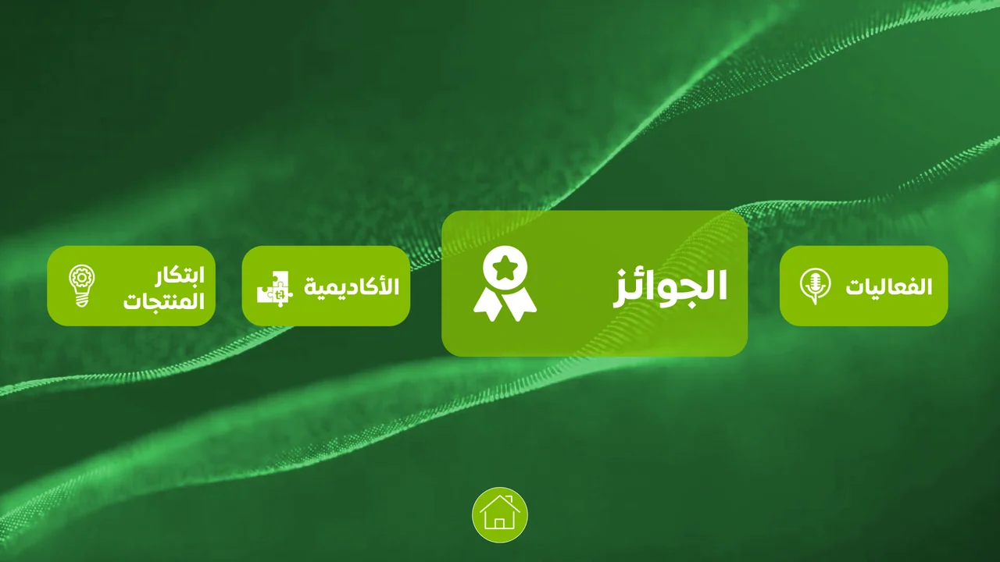

Large Arabic heading
The Testing branch contains a WebM and a background playback video; these are production outputs, not proof of runtime testing performed for this portfolio.
Editorial information adapted for a large display.
Explore the story
Keep Arabic content readable while retaining the context of supplied photography.
A large heading and explanatory copy are layered over a workshop image. Related touch and control-panel formats extend the content treatment toward screen delivery.
The Testing branch contains a WebM and a background playback video; these are production outputs, not proof of runtime testing performed for this portfolio.
The broader production set includes touchscreen and control-panel artwork, motion sources and testing exports.
Explore the complete compositions and interface states. Select any image for a closer look.
Structure, interaction and visual decisions that give the work its character.
RoleScreen composition, typography, motion adaptation and export preparation; confirm exact responsibilities.
AssetsSupplied animation direction, photograph, portrayed people and identity artwork require appropriate credits and permission. Private evidence draft. The project contains supplied presentation direction; background, icons, layout and motion contributions are not individually established. The artwork is a saved interface state, not proof of software behavior or delivered use. Only the separate native header logo image object was removed.
StatusScreen-production scope evidenced; photography rights, final selected states and delivery confirmation pending.